6. Swap the hero's mesh and animations
Goal: play the kit with your own character mesh and clips. The hero stays the kit's BP_Character with all its moves; only its look and clips change, and no code is involved.
You need: Unreal Engine 5.3–5.8 with the plugin enabled (pictures: 5.7), Settings > Plugin Content ticked in the Content Browser (5.3–5.5: Show Plugin Content), and the demo map Course1_RunAndJump open. Your Skeletal Mesh with clips made for its skeleton (or retargeted to it, with a licence that allows it): at least idle, walk, run, jump start, fall loop and land. Here: the Third Person template's SKM_Quinn_Simple and its clips in Content > Characters > Mannequins. Stop Play before you edit the assets.
To give your own Character Blueprint the kit's moves instead, see the Quickstart, Integrate with your own character.
Part 1: your own copies
- Duplicate the theme you play with into your own folder, and keep the original as a reset point. In the Content Browser go to Plugins > Proving Grounds: 3D Platformer Mechanics > Themes; the demo courses use DA_Lab_Course.
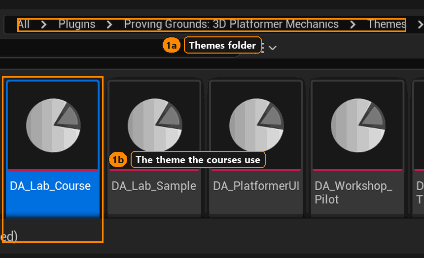
Right-click it, choose Duplicate, and put the copy in your folder (here DA_MyHeroTheme in MyHero).
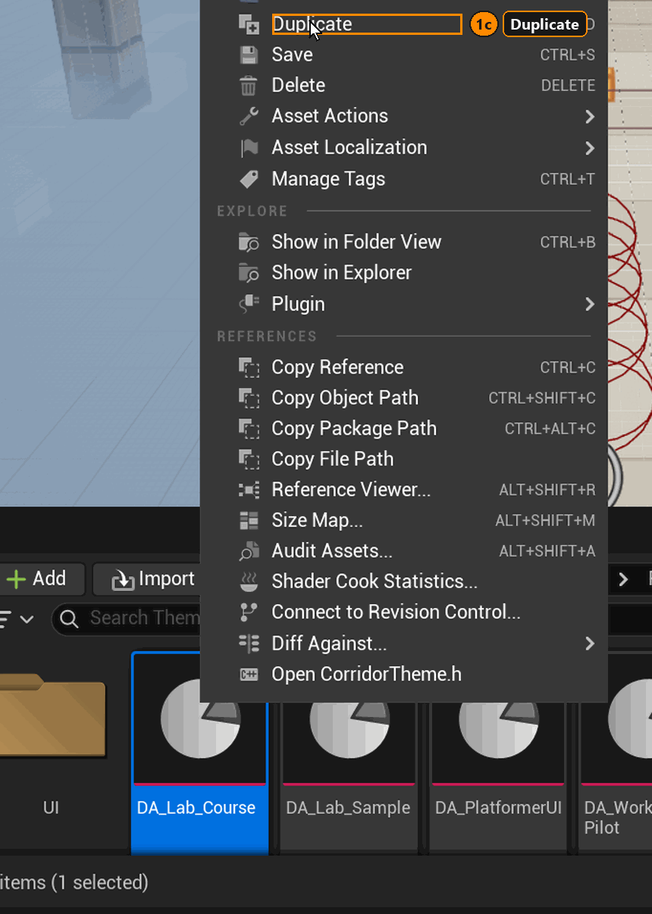
- Open the copy. In the Details search box type Anim Set: the theme's animation set is DA_HeroActions. Click the Browse to Asset in Content Browser button under it (the folder icon).
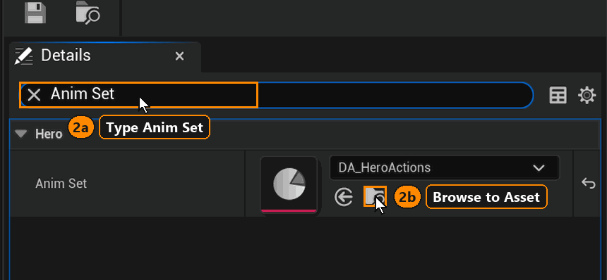
The Content Browser jumps to Characters > HeroActions with DA_HeroActions selected. Duplicate it into your folder the same way (here DA_MyHeroAnims). The copy keeps the kit's clips in every field you do not replace (slide, rail, wall, rope, vehicle).
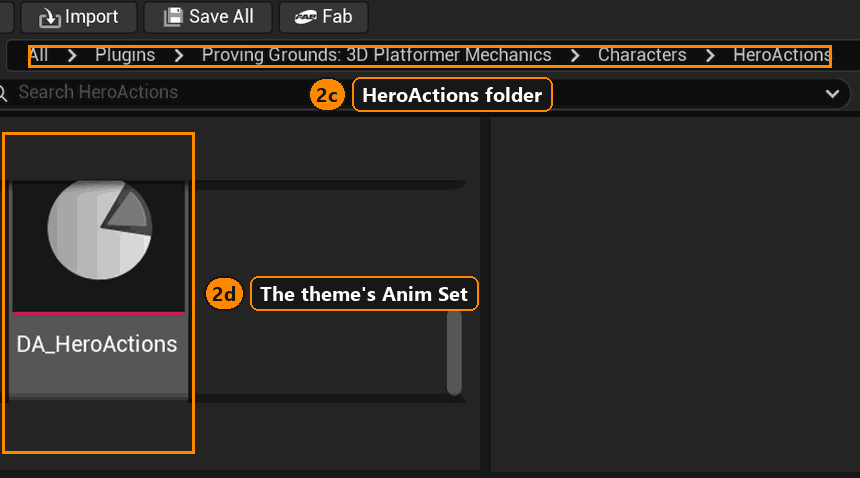
Part 2: mesh and clips
The kit ships its own copies of the UE mannequin and its clips, with the same names (SKM_Quinn_Simple, MM_Idle, ...) in the plugin folder. So every field below is filled from the Content Browser: select the asset there, then click the field's Use Selected Asset from Content Browser button (the arrow icon). The Content Browser shows which folder you took it from.
- In the Content Browser select your mesh (here Content > Characters > Mannequins > Meshes > SKM_Quinn_Simple).
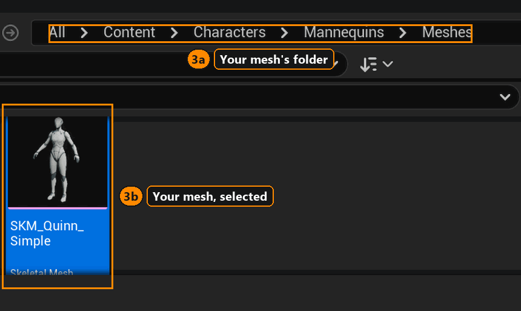
Open DA_MyHeroAnims, type Mesh in its Details search box and click Use Selected Asset from Content Browser under Mesh.
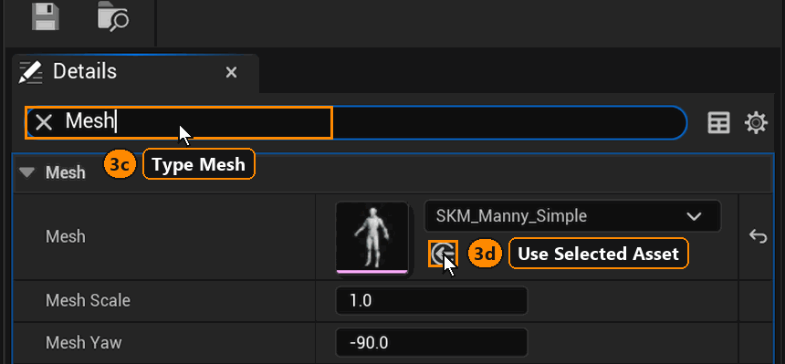
- Do the same for each clip: select it in the Content Browser, type the field's name in the Details search box, click Use Selected Asset from Content Browser. Start with Idle (here Mannequins > Anims > Unarmed > MM_Idle): without it the hero stands in its reference pose.
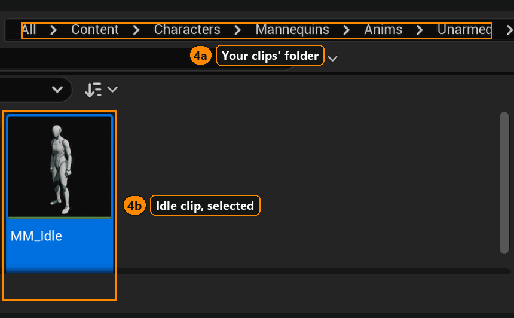
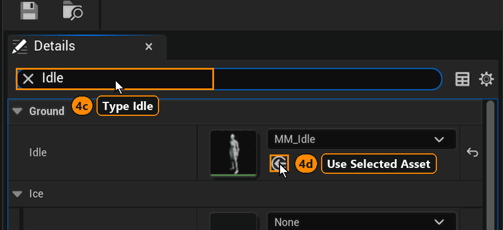
Then, in Unarmed and its sub-folders:
- Walk (group Ground): Walk > MF_Unarmed_Walk_Fwd
- Run (Ground): Jog > MF_Unarmed_Jog_Fwd
- Land (Ground): Jump > MM_Land
- Jump Start (group Air): Jump > MM_Jump
- Fall Loop (Air): Jump > MM_Fall_Loop
The other fields are optional: fill them with your own clips when you have them. Until then the copy holds the kit's clips, made for the kit's own mannequin skeleton.
- Check Mesh Scale and Mesh Yaw (type Mesh in the search box again). Mesh Scale makes the mesh fit the hero's capsule (radius 35 cm, half height 90 cm: keep it, the movement is tuned for it); Mesh Yaw turns it to face the way the hero runs. Quinn is 180 cm tall and faces sideways in its own file, so the defaults 1 and -90 fit (-90 fits the UE mannequins).
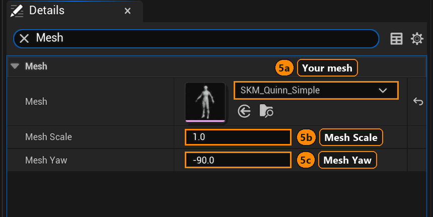
Part 3: use it
- Select DA_MyHeroAnims in the Content Browser, open DA_MyHeroTheme, type Anim Set and click Use Selected Asset from Content Browser.
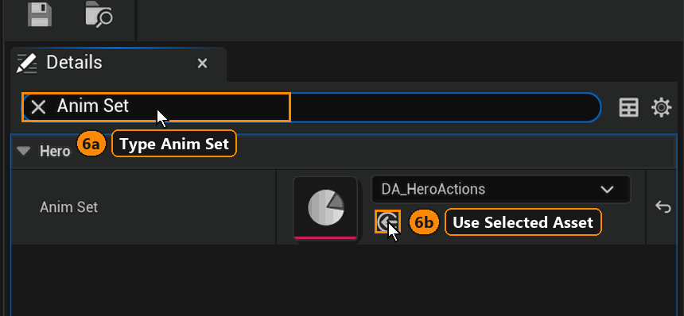
Then select DA_MyHeroTheme in the Content Browser and the level's BP_Control in the Outliner (the demo maps call it Demo_Control; topic 3 shows how to find it). Type Theme in its Details search box and click Use Selected Asset from Content Browser under 3 Theme > Theme.
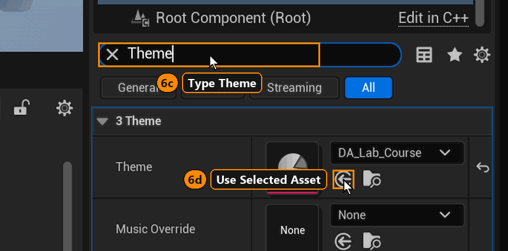
Result
Click Play: the hero is now Quinn, with all the kit's moves (measured: the Play hero's mesh is SKM_Quinn_Simple and its Anim Set DA_MyHeroAnims). Here it is just after the second jump of a double jump, 2.8 m above its start.
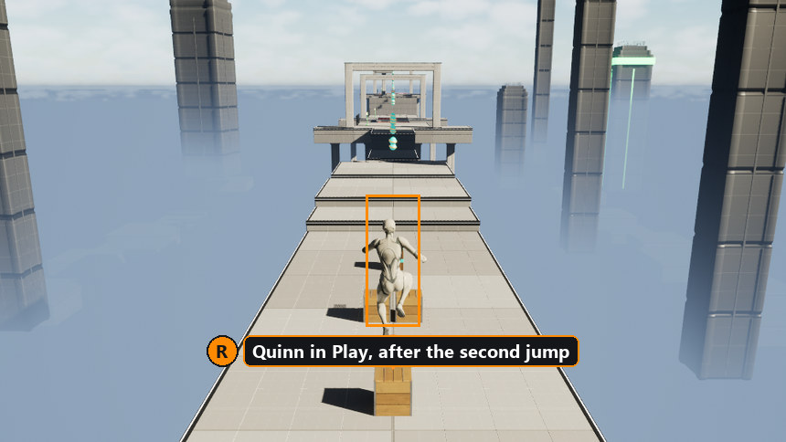
Then check idle, walking, a spin, a checkpoint death and respawn, and the end of the course: the new look must still be there after a respawn.
If it doesn't work - The kit's own hero still shows: BP_Character's own Anim Set (Corridor > Animation) is set (it wins over the theme; leave it empty), BP_Control uses another theme, or the anim set's Mesh is empty (an anim set without a mesh is ignored). - The hero stands in a T or A pose: Idle is empty, or the clips are made for another skeleton; retarget them to your mesh's skeleton. - The mesh floats, sinks or looks too big or small: Mesh Scale. It runs sideways: Mesh Yaw.
See also: Quickstart: Replace the hero's mesh and animation set · Abilities and actions